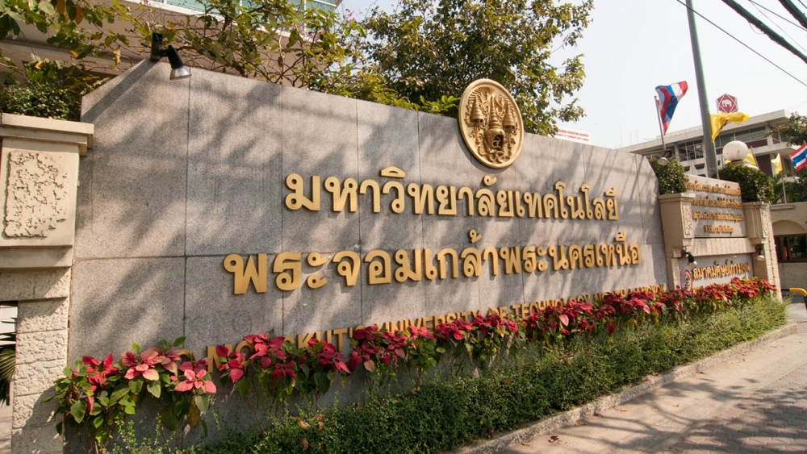

โรงเรียนเทคนิคพระนครเหนือเปิดการศึกษา
กระทรวงศึกษาธิการประกาศจัดตั้งโรงเรียนเทคนิคพระนครเหนือภายใต้ความร่วมมือระหว่างไทย-เยอรมัน โดยมีวัตถุประสงค์เพื่อผลิตช่างฝีมือที่เน้นการปฏิบัติจริงและประสบการณ์ในงานอุตสาหกรรม
KING MONGKUT'S UNIVERSITY OF TECHNOLOGY NORTH BANGKOK
สถาบันเทคโนโลยีพระจอมเกล้า ตั้งขึ้นตามพระราชบัญญัติสถาบันเทคโนโลยีพระจอมเกล้า พ.ศ. 2514 ชื่อ สถาบันเทคโนโลยีได้รับพระราชทานพระมหากรุณาธิคุณโปรดเกล้าโปรดกระหม่อมพระราชทานนามอันศักดิ์สิทธิ์ และเป็นมงคลยิ่งว่า "สถาบันเทคโนโลยีพระจอมเกล้า" ตามพระบรมนามาภิไธยแห่งพระบาทสมเด็จพระจอมเกล้าเจ้าอยู่หัว และ ทรงพระมหากรุณาธิคุณมีพระบรมราชานุญาตให้อัญเชิญพระตรา "พระมหามงกุฎ" มาเป็นสัญลักษณ์แห่งสถาบันเทคโนโลยีพระจอมเกล้าด้วย ตามบัญญัติ แห่งกฎหมายสถาบันเทคโนโลยีพระจอมเกล้า พ.ศ. 2514 ได้กำหนดให้รวมวิทยาลัยเทคนิคพระนครเหนือ วิทยาลัยโทรคมนาคมนนทบุรี และ วิทยาลัยเทคนิคธนบุรี ซึ่งสังกัดกรมอาชีวศึกษา กระทรวงศึกษาธิการเข้าด้วยกัน แล้วจัดตั้งเป็นสถาบันเทคโนโลยี เรียกกันว่า "สถาบันเทคโนโลยีพระจอมเกล้า" เป็นสถาบันศึกษาและวิจัยมีวัตถุประสงค์ที่จะผลิตครูอาชีวศึกษาระดับปริญญาให้ การศึกษาทางเทคโนโลยีและวิทยาศาสตร์ สถาบันเป็นนิติบุคคลมีฐานะเป็นกรมในกระทรวงศึกษาธิการกำหนดการแบ่ง ส่วนราชการออกเป็นสำนักงานอธิการบดี และคณะ

กระทรวงศึกษาธิการประกาศจัดตั้งโรงเรียนเทคนิคพระนครเหนือภายใต้ความร่วมมือระหว่างไทย-เยอรมัน โดยมีวัตถุประสงค์เพื่อผลิตช่างฝีมือที่เน้นการปฏิบัติจริงและประสบการณ์ในงานอุตสาหกรรม
ได้มีการปรับฐานะจากโรงเรียนเป็นวิทยาลัย และได้รับการช่วยเหลือด้านเครื่องมือ เครื่องจักร และผู้เชี่ยวชาญจากรัฐบาลสหพันธ์สาธารณรัฐเยอรมันอย่างต่อเนื่อง
มีประกาศพระราชบัญญัติสถาบันเทคโนโลยีพระจอมเกล้า พ.ศ. 2514 ให้รวมวิทยาลัยเทคนิคพระนครเหนือ วิทยาลัยเทคนิคธนบุรี และวิทยาลัยโทรคมนาคมนนทบุรีเข้าด้วยกัน เพื่อพัฒนาการศึกษาทางเทคโนโลยี วิทยาศาสตร์ และครุศาสตร์อุตสาหกรรม
สถาบันเทคโนโลยีพระจอมเกล้าถูกแบ่งออกเป็นสถาบัน 3 แห่ง เพื่อความคล่องตัวในการบริหารงาน โดยวิทยาเขตพระนครเหนือมีบทบาทสำคัญในการผลิตบุคลากรด้านวิทยาศาสตร์และเทคโนโลยี
มหาวิทยาลัยได้ขยายการศึกษาสู่จังหวัดปราจีนบุรี โดยจัดตั้งสถาบันเทคโนโลยีพระจอมเกล้าพระนครเหนือ ปราจีนบุรี เพื่อเปิดโอกาสทางการศึกษาให้กว้างขึ้น
มีประกาศพระราชบัญญัติมหาวิทยาลัยเทคโนโลยีพระจอมเกล้าพระนครเหนือ พ.ศ. 2550 ให้สถาบันเปลี่ยนเป็นมหาวิทยาลัยของรัฐ เพื่อเพิ่มความเป็นอิสระและประสิทธิภาพในการบริหารจัดการการศึกษา
มหาวิทยาลัยร่วมมือกับจังหวัดระยองและเริ่มจัดตั้งวิทยาเขตระยองเพื่อขยายโอกาสทางการศึกษาระดับอุดมศึกษาให้แก่ประชาชนในภาคตะวันออก
ความสัมพันธ์ระหว่างประเทศไทยและสหพันธ์สาธารณรัฐเยอรมันเริ่มต้นจากการลงนามสัญญาความร่วมมือทางเศรษฐกิจและวิชาการในปี พ.ศ. 2499 และต่อมาได้มีการจัดตั้งโรงเรียนเทคนิคพระนครเหนือขึ้นอย่างเป็นทางการในปี พ.ศ. 2502 โดยรัฐบาลเยอรมันส่งเครื่องจักร เครื่องมือ อุปกรณ์การสอน และผู้เชี่ยวชาญชาวเยอรมันมาช่วยสอนพร้อมกับครูไทย เพื่อยกระดับคุณภาพการศึกษาด้านช่างฝีมือและอุตสาหกรรมของประเทศ